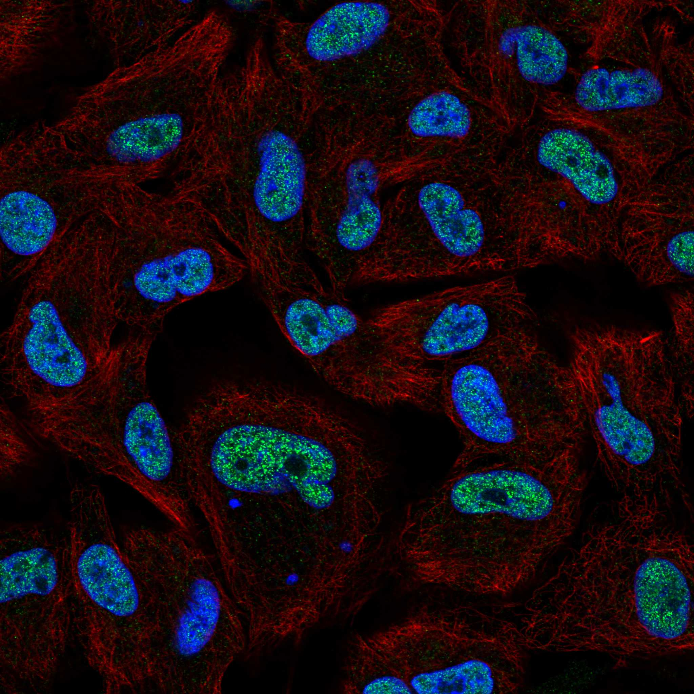
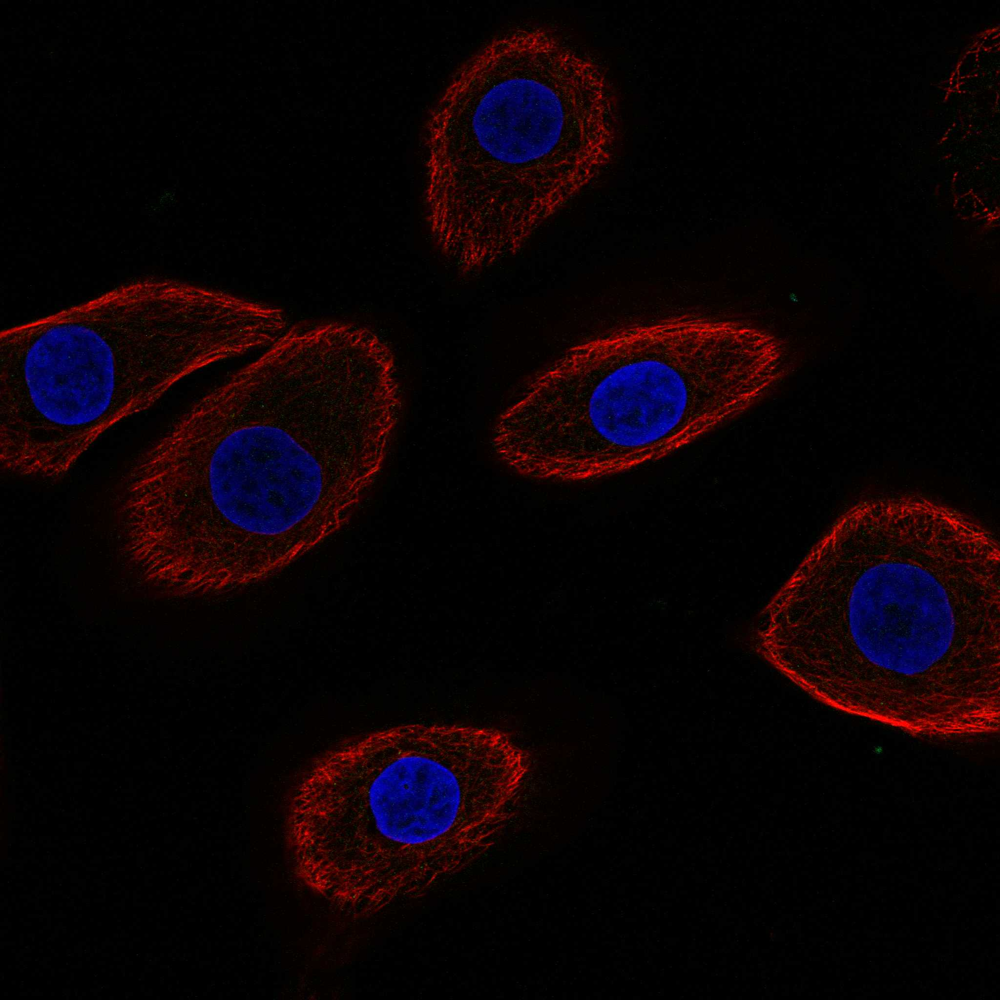

type: protein-evaluation gene: "HORMAD1" date: 2026-06-01 tags: [protein-scout, nucleoplasm, evaluation] status: scored ---
HORMAD1 核蛋白评估报告
1. 基本信息
| 项目 | 内容 |
|---|---|
| 基因名 / 别名 | HORMAD1 / NOHMA / HORMA domain-containing protein 1 |
| 蛋白全名 | HORMA domain-containing protein 1 |
| 蛋白大小 | 394 aa / 45.2 kDa |
| UniProt ID | Q86X24 |
HPA IF 图像:  
2. 评分总览
| 维度 | 得分 | 新权重 | 加权后 | 关键证据摘要 |
|---|---|---|---|---|
| 核定位特异性 | 6/10 | x4 | 24.0 | HPA Approved: Nucleoplasm (main) + Nucleoli (additional); UniProt: Nucleus+Chromosome (ECO:0000250); GO: chromosome+nucleus (IDA)+synaptonemal complex |
| 蛋白大小 | 8/10 | x1 | 8.0 | 394 aa, 45.2 kDa |
| 研究新颖性 | 4/10 | x5 | 20.0 | PubMed strict=70 |
| 三维结构 | 7/10 | x3 | 21.0 | PDB: 8J69 (2.67A, full-length); AlphaFold pLDDT=65.6, pct>90=35.5% |
| 调控结构域 | 7/10 | x2 | 14.0 | HORMA domain (IPR003511); meiotic chromosome axis protein; DSB repair/synapsis regulation |
| PPI 网络 | 6/10 | x3 | 18.0 | STRING: SYCP3 (0.973), CCDC36 (0.948), MSH4 (0.942), SPO11 (0.901), TRIP13 (exp=0.214); IntAct: MCM9 (coIP) |
| 加权总分 | 105/180** | |||
| 互证加分 | +0.0 | 无额外互证加分 | ||
| 归一化总分 (÷1.83) | 57.4/100** |
3. 详细分析
3.1 核定位证据
| 来源 | 定位 | 可信度 |
|---|---|---|
| HPA | Nucleoplasm (main), Nucleoli (additional) | Approved |
| UniProt | Nucleus (ECO:0000250), Chromosome (ECO:0000250) | By similarity |
| GO-CC | chromosome (ISS), nucleus (IDA), synaptonemal complex (IEA) | - |
结论: HPA Approved 级别 Nucleoplasm 主定位。UniProt 和 GO 一致支持核/染色体定位。作为 meiotic chromosome axis 蛋白，核定位有实验依据。
3.2 蛋白大小评估
394 aa, 45.2 kDa。含 HORMA domain。适中大小。
3.3 研究现状
| 指标 | 数值 |
|---|---|
| PubMed strict (Title/Abstract) | 70 |
| PubMed broad | 105 |
| 新颖性级别 | 有一定研究 |
PubMed 70 篇。HORMAD1 主要在 meiosis 方向被研究：meiotic DSB machinery、synaptonemal complex formation、meiotic silencing (MSUC)。Cancer-testis antigen 方向也有报道 (ovarian carcinoma)。研究相对集中，但在非 meiosis 方向尚有空间。
关键文献: 1. Dereli I et al. (2024). "Seeding the meiotic DNA break machinery and initiating recombination on chromosome axes." *Nat Commun*. PMID: 38580643 2. Biot M et al. (2024). "Principles of chromosome organization for meiotic recombination." *Mol Cell*. PMID: 38657614 3. Wang H et al. (2023). "Structural and biochemical insights into the interaction mechanism underlying HORMAD1 and its partner proteins." *Structure*. PMID: 37794593 4. Shahzad MM et al. (2013). "Biological significance of HORMA domain containing protein 1 (HORMAD1) in epithelial ovarian carcinoma." *Cancer Lett*. PMID: 22776561 5. Jiao X et al. (2025). "Aberrant activation of chromosome asynapsis checkpoint triggers oocyte elimination." *Nat Commun*. PMID: 40050306
3.4 三维结构分析
| 指标 | 数值 |
|---|---|
| AlphaFold | AF-Q86X24-F1 v6 |
| 平均 pLDDT | 65.6 |
| pLDDT >90 | 35.5% |
| pLDDT 70-90 | 17.0% |
| pLDDT 50-70 | 7.6% |
| pLDDT <50 | 39.8% |
| PDB | 8J69 (2.67A, full-length aa1-394) |
AlphaFold PAE:
中等 pLDDT (65.6)，但 8J69 PDB 结构覆盖全长 (2.67A, X-ray)，提供了实验结构支持。HORMA domain 区域预测置信度较高。
3.5 结构域分析
| 来源 | 结构域 | 备注 |
|---|---|---|
| InterPro | IPR003511 (HORMA), IPR036570 (HORMA superfamily), IPR051294 | HORMA domain: chromatin-associated protein interaction module |
| Pfam | PF02301 (HORMA) | HORMA domain |
| PDB | 8J69 (full-length) | 实验结构 |
HORMA domain 蛋白，典型 meiotic chromosome axis 组分。HORMA domain 是染色体相关蛋白相互作用模块（类似 MAD2, REV7）。调控 meiotic DSB 形成、synapsis 和 MSUC (meiotic silencing of unsynapsed chromatin)。
3.6 PPI 网络（三源综合）
STRING 预测互作 (combined score >0.7):
| Partner | Score | Experimental | 功能类别 |
|---|---|---|---|
| SYCP3 | 0.973 | 0.050 | Synaptonemal complex |
| CCDC36 | 0.948 | 0 | Meiosis |
| MSH4 | 0.942 | 0 | Meiotic recombination |
| SPO11 | 0.901 | 0 | Meiotic DSB |
| SYCP1 | 0.878 | 0.048 | Synaptonemal complex |
| REC8 | 0.852 | 0.107 | Meiotic cohesin |
| SYCE1 | 0.832 | 0 | Synaptonemal complex |
| SYCE2 | 0.787 | 0 | Synaptonemal complex |
| MAD2L2 | 0.781 | 0 | HORMA domain |
| TRIP13 | 0.781 | 0.214 | HORMA AAA+ ATPase |
| MSH5 | 0.772 | 0 | Meiotic recombination |
| SMC3 | 0.760 | 0.125 | Cohesin |
| TEX12 | 0.760 | 0 | Synaptonemal complex |
| SYCP2 | 0.754 | 0 | Synaptonemal complex |
| STAG3 | 0.751 | 0 | Cohesin |
实验验证互作 (IntAct):
| Partner | 方法 | PMID | 功能类别 |
|---|---|---|---|
| MCM9 | anti tag coIP | 26300262 | DNA replication |
| DCDC2 | two hybrid array | 32296183 | Ciliary protein |
| MYG1 | validated two hybrid | 32296183 | Mitochondrial |
| MEOX2 | two hybrid array | 32296183 | Homeobox TF |
UniProt 记录互作: DCDC2, MEOX2, MYG1 (各 3exp)
Meiotic chromosome axis 蛋白：SYCP1/2/3, SYCE1/2, TEX12 (synaptonemal complex), MSH4/5, SPO11 (recombination), REC8/SMC3/STAG3 (cohesin), TRIP13 (HORMA AAA+ ATPase)。PPI 网络紧密围绕 meiosis。
3.7 多库互证
| 维度 | 来源 | 结果 | 是否一致 |
|---|---|---|---|
| 定位 | HPA / UniProt / GO | Nucleoplasm / Nucleus+Chromosome / chromosome+nucleus+SC | 三源一致 |
| PPI | STRING / IntAct / UniProt | DCDC2/MYGI/MEOX2 多源重叠 | 有限互证 |
| 结构 | AlphaFold + PDB | pLDDT=65.6 + 8J69 full-length | 实验+预测双重支持 |
互证加分明细: 无额外互证加分 总计: +0 / max +3
4. 总体评价
推荐等级: 2星 (57.4/100)
HORMAD1 是明确的 meiotic chromosome axis 蛋白，HPA Approved 核定位。HORMA domain 赋予其染色质相关蛋白互作能力。meiosis 方向研究较成熟 (PM=70)，但 cancer-testis antigen 方向（ovarian carcinoma）仍有 niche 空间。PDB 8J69 提供全长结构支持。
核心优势: 1. HPA Approved 核定位 2. HORMA domain 染色体互作模块 3. PDB 8J69 全长结构 4. 明确的 meiotic chromatin 功能
风险/不确定性: 1. PubMed=70，新颖性有限（meiosis 研究方向） 2. Meiosis 为组织特异性过程，通用性受限 3. PPI 以预测为主，实验验证互作较少
下一步建议:
- Cancer-testis antigen 方向：HORMAD1 在非减数分裂细胞的异位表达功能
- 鉴定 soma 中的 HORMAD1 互作伙伴
- 条件性表达/敲除实验
5. 数据来源
- UniProt: https://www.uniprot.org/uniprotkb/Q86X24
- AlphaFold: https://alphafold.ebi.ac.uk/entry/Q86X24
- PDB: 8J69
- PubMed: https://pubmed.ncbi.nlm.nih.gov/?term=%22HORMAD1%22%5BTitle/Abstract%5D
- HPA: https://www.proteinatlas.org/ENSG00000143452-HORMAD1
HPA IF 图像已本地嵌入。
PAE 图像说明: AlphaFold PAE 图像已重新获取并嵌入（见下方 PAE 图像修正块）；结构判断仍结合 pLDDT 与 PAE 综合判断。
<!-- AF_PAE_REPAIR_START --> PAE 图像修正（2026-06-05）: AlphaFold 提供 predicted aligned error 图像；此前“PAE 图像暂无数据”的表述为未获取/未嵌入导致。